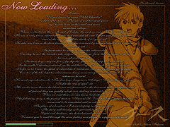

目次 > ゲームについて > 日本Falcom 攻略 > Ys > イースの本 > ETERNAL ロード画面
らんの眼
Ys(イース) Ys Eternal(VE)/Ys Complete
| 概要 | 情報 | ボス戦 |
| 敵キャラ一覧 | アイテム一覧 | 攻略チャート |
| 地図 | ダウンロード | イースの本 |
| 経験値表 | 地名一覧 | タイムアタック |
| ETERNAL / Complete 比較 | キャラクター一覧 | |
| Ys 攻略へ | 目次へ戻る |
| [ ハダル ] [ トバ ] [ ダビー ] [ メサ ] [ ジェンマ ] [ ファクト ] [ 紙切れ ] [ ETERNAL ロード画面 ] |
| ETERNAL ロード画面 |
| Do you know by name Adol Christin? Adol Christin... Thousand and hundred years ago he was born at the small unknown mountain village.Where is siluated in the north-east of Eulope, the western end in Eleshia continent. The was a very brave adventurer, who had traveled all over Eulope and foreign countries since at the age of 16 till the death of 63 years old. The who was born as the poor peasont's boy was common by acknowledged to be a curious and active youth. In particular he wants to know the outerwold. One day hemet the traveler who stopped in his village, from then he began to go to his own adventurous trip. In those days-only onfoot & by ship-his sphere of activity was marvelous. Can tor of that he kept his adventurous diary concerning occurrences which he met wherever he went. The following stroy is the part of start in "Ancent Ys Vanished" this story is the first memorial to be translated and novelized. The place of adventure is Esteria sleeing in the ocean floor. The story will develop as he proceeds to he land. Bightand darkness, the disturbed chaotic era. We want you to real throught the same feeling everything he experienced himself. 君は、アドル＝クリスティンという名前を知っているだろうか? アドル＝クリスティン---今をさかのぼること千と数百年の昔、エレシア大陸の西端、エウロペ地方の北東に位置する、名も知れぬ小さな村に生まれ、16 歳の時より、63 歳にしてこの世を去るまで、エウロペを中心とした海外諸地域を旅してまわった勇猛果敢なる冒険家である。 貧しい農夫の子として生まれた彼は、自他ともに認める快活で何にでも興味を示す好奇心旺盛な若者であったという。 特に彼は、外の世界についてよく知りたがり、ある日彼の村に立ちよった旅人との出会いがきっかけで、自らも冒険の旅に出ることとなる。 その彼の行動範囲は、主となる交通手段が歩きと船だけだった当時の世界では、驚くべきものがあった。 彼は行くその先々で起こったできごとを、冒険日誌なるものに記し、それを後世に残していった。 これから書かれる物語は、その記念すべき第一冊『失われし古代王国』の出だしの部分を翻訳、小説化したものである。冒険地は、今や大海の底に眠るとうたわれる国エステリア。物語は、彼がその国へ赴くいきさつをおり込みながら進んでゆく。 光と闇が、いまだ混迷を極めていた時代。彼がその肌で体験したことを、彼自身になったつもりで読んでいたただきたい。  |
| [ ハダル ] [ トバ ] [ ダビー ] [ メサ ] [ ジェンマ ] [ ファクト ] [ 紙切れ ] [ ETERNAL ロード画面 ] |
| 概要 | 情報 | ボス戦 |
| 敵キャラ一覧 | アイテム一覧 | 攻略チャート |
| 地図 | ダウンロード | イースの本 |
| 経験値表 | 地名一覧 | タイムアタック |
| ETERNAL / Complete 比較 | キャラクター一覧 | |
| ページ上部へ | Ys 攻略へ | 目次へ戻る |